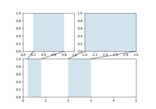
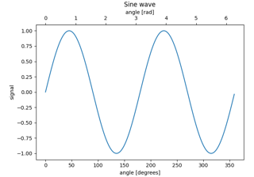

Subplots, axes and figures#
Aligning Labels


Controlling view limits using margins and sticky_edges
Controlling view limits using margins and sticky_edges


Axes Zoom Effect


Resizing axes with constrained layout
Resizing axes with constrained layout
Resizing axes with tight layout
Resizing axes with tight layout
Different scales on the same axes
Different scales on the same axes
Figure size in different units
Figure size in different units


Geographic Projections

Combining two subplots using subplots and GridSpec
Combining two subplots using subplots and GridSpec

Using Gridspec to make multi-column/row subplot layouts
Using Gridspec to make multi-column/row subplot layouts
Nested Gridspecs

Managing multiple figures in pyplot
Managing multiple figures in pyplot

Secondary Axis


Figure subfigures

Subplots spacings and margins